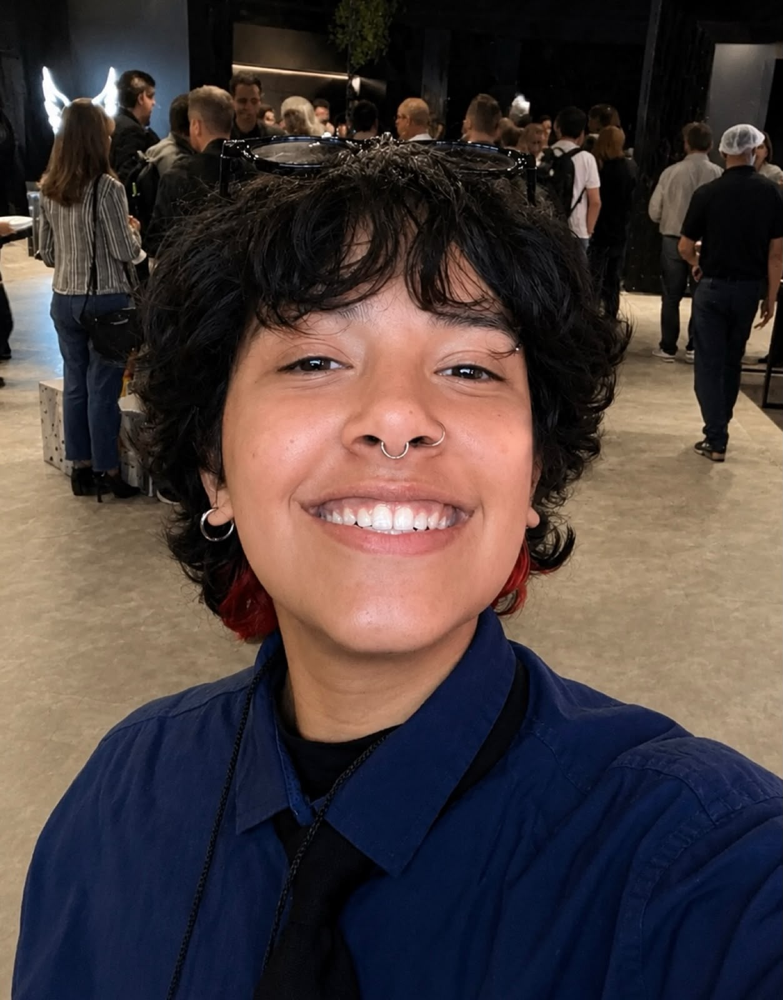
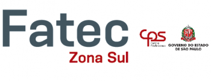

Portfólio
Yuri Rodrigues
Silva

Yuri Rodrigues Silva
Storytelling
Meu nome é Yuri Rodrigues Silva e sou estudante de Desenvolvimento de Software Multiplataforma (DSM) na FATEC Zona Sul. Desde meu primeiro contato com a tecnologia, desenvolvi interesse pela criação de soluções digitais e pelo impacto que elas podem gerar na vida das pessoas e das empresas.
Ao longo da minha formação, busco constantemente aprimorar meus conhecimentos por meio de cursos, projetos e experiências práticas. Possuo formação complementar pelo SENAC, através do Programa Transforme-se em parceria com a Serasa Experian, e pelo Instituto Percorre, onde desenvolvi competências em programação, desenvolvimento web, banco de dados, versionamento de código e trabalho em equipe.
Atualmente, aprofundo meus conhecimentos em programação, desenvolvimento de software e tecnologias web por meio da graduação e de projetos práticos. Sou uma pessoa dedicada, comprometida com o aprendizado contínuo e motivado por novos desafios, buscando construir uma carreira sólida na área de tecnologia.
FATEC Zona Sul
Faculdade Atual

Atualmente curso Desenvolvimento de Software Multiplataforma (DSM) na FATEC Zona Sul, uma instituição pública de ensino superior reconhecida pela qualidade acadêmica e pela formação de profissionais para o mercado de tecnologia.
Durante a graduação, desenvolvo conhecimentos em programação, banco de dados, desenvolvimento web, engenharia de software, análise e modelagem de sistemas, além de metodologias utilizadas no desenvolvimento de aplicações para diferentes plataformas.
Também participo de projetos acadêmicos que permitem aplicar na prática os conceitos estudados, fortalecendo habilidades técnicas, analíticas e de trabalho em equipe. A formação tem contribuído significativamente para meu crescimento profissional e para o desenvolvimento de soluções tecnológicas inovadoras.
Instituto Percorre
Desenvolvimento Web
Formação voltada ao desenvolvimento web, proporcionando conhecimentos teóricos e práticos para a criação de páginas e aplicações modernas. Durante o curso, foram estudadas tecnologias como HTML5 e CSS3 para estruturação e estilização de interfaces, além da utilização de Git e GitHub para controle de versão e gerenciamento de projetos.
A capacitação também abordou comunicação profissional, raciocínio lógico e matemático aplicado à tecnologia, desenvolvimento de soft skills, trabalho em equipe e metodologias voltadas ao mercado de trabalho.
Como parte da formação, participei do Projeto Integrador, aplicando na prática os conhecimentos adquiridos por meio do desenvolvimento de soluções reais, desde o planejamento até a implementação e apresentação dos projetos.
Além da formação técnica, participei da palestra "Empoderamento Feminino no Mercado de Trabalho" e de visitas técnicas à TOTVS durante o evento Criatech, experiências que ampliaram minha visão sobre o mercado de tecnologia e fortaleceram meu desenvolvimento profissional.
SENAC
Programa Transforme-se | Serasa Experian

Formação voltada ao desenvolvimento de sistemas, proporcionando conhecimentos em lógica de programação, banco de dados, testes de software, versionamento de código e boas práticas de desenvolvimento.
O curso de Lógica de Programação foi focado no desenvolvimento do raciocínio lógico e na resolução de problemas por meio da programação, abordando algoritmos, estruturas de controle, Programação Orientada a Objetos (POO), organização de código e técnicas de depuração.
A formação também incluiu Informática Básica, com conteúdos voltados ao uso profissional do Windows, Pacote Office, navegação na internet e organização digital, contribuindo para o desenvolvimento de competências essenciais para o ambiente corporativo.
A experiência proporcionou uma base sólida para o desenvolvimento de software e ampliou minha compreensão sobre tecnologia, produtividade e boas práticas utilizadas no mercado de trabalho.
Projetos
Pet Chico
- Javascript; HTML; CSS
- Site para venda de produtos do pet Shop;
- Conta com um link para agendamento de banho e tosa;
Criaê
- Javascript; HTML; CSS
- Site para portfólio de uma agência criada para acessória do pet shop;
- Conta com um link para contato de todos os integrantes;
Site Confeitaria Thayara Polizel
- Javascript; HTML; CSS;
- Site para venda de produtos da confeitaria;
- Conta com o redirecionamento para o contato da empresa com todas as redes sociais;
Aplicação Windows forms Confeitaria Thayara Polizel
- Controle de entrada e saída de vendas de uma confeitaria
- A aplicação seria de uso único da cliente, tenho o objetivo ter registros de pedidos;
- Conta com exportação de relatório para organização contínua da usuária;
- Conta com exportação de orçamento para o cliente visualizar os valores dos produtos que deseja comprar;